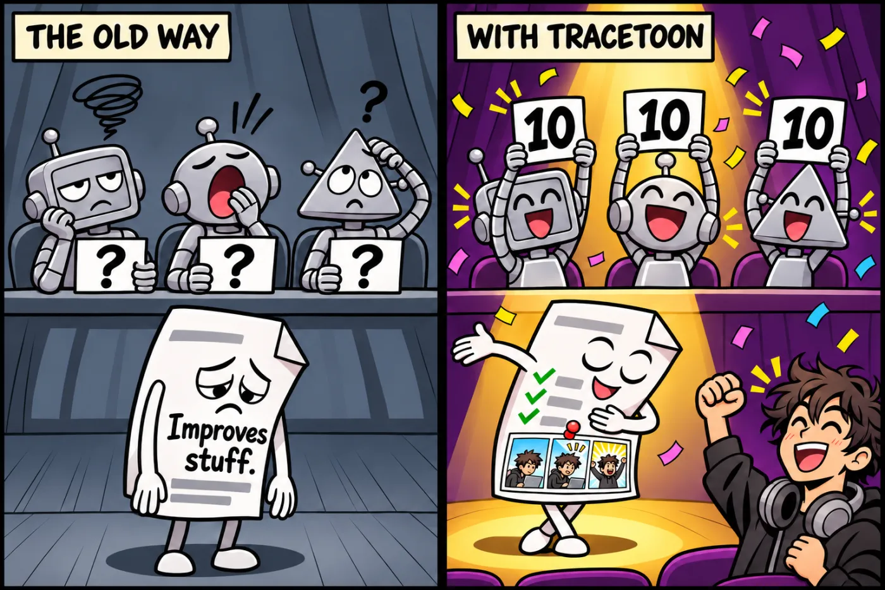

Other benchmarks read the diff. prbench reads the receipts.
prbench replays real pull requests from the coding agent's own session logs: what the user asked for, what the agent tried, what actually ran. A PR tool writes the description in a sealed sandbox, exactly as it would on your machine. Blind judges then check every claim against an expert-reviewed fact sheet. It's open source, the cases are downloadable, and you can run it yourself.
- The real session The redacted Claude Code or Codex transcript that produced the change.
-
Sandboxed writer
The PR tool runs for real, with the repo bundle and logs on disk. A fake
ghcatches the PR. - PR draft Candidate and baseline each write the same PR, three times over.
- Two judges, both orders Blind and swapped. A pick counts only when both judges agree.
- Fact-sheet scoring Claims, context, uncertainties, traps, plus a 10-item reviewer rubric.
- Expert error check Every factual error a judge flags is re-checked against the evidence by expert models.
- Results you can trust Paired wins, score with 95% intervals, confirmed errors, cost per draft.
Same cases, same evidence, same models on both sides. Only the PR tool changes.
A diff shows what changed. The session shows why.
An AI agent's pull request is the end of a long conversation. The user explained the goal, the agent made a plan, tried things, and ran tests. A PR tool worth using should turn that into a description a reviewer can trust. You can only measure that if the benchmark has the conversation too.
What a diff-only benchmark sees
@@ src/cli.ts @@ + .option("--systems <list>", + "writer systems: native, + baseline, candidate") @@ src/comparison.ts @@ - const SYSTEMS = ALL_SYSTEMS; + const SYSTEMS = selected(opts);
Can't tell: why the option exists, or whether the tests passed. A writer is left guessing, and a grader can't catch the guess.
What prbench sees as well
bun run test → 240 passed, 1 skipped, 3 failedSo it can check: does the PR say why, and does it report the failing tests honestly instead of “tests pass”?
An illustration, simplified from the prbench-compare-systems case, the worked example on the results page. There, the agent opening the PR on its own wrote “bun run test running”; the recorded run went on to fail.
End to end, from the agent's real logs.
Typical PR and code-review benchmarks start from a diff and compare text. As far as we know, no other PR test framework replays the pull request from the agent's actual session logs and runs the PR tool the way it really runs.
gh. Probes check that each side sees only its own skill.“Typical” describes the common setup of PR-description and code-review evaluations as we found them in our related-work survey, not any one project. Statistics: paired design (same cases, evidence and models on both sides), three replicates per case, and 95% bootstrap intervals clustered by case, so repeats never count as extra cases.
61 real PRs. 1,464 blind judge readings.
prbench's biggest run so far pits Tracetoon's evidence-graph brief (candidate62) against Tracetoon's original multi-agent workflow. Both providers ran it separately, each with its own writer and its own two judges.
| Tracetoon vs agent alone | Codex | Claude Code |
|---|---|---|
| Session model · judges | Sol 6.1Sol + Terra | Opus 5.5Opus + Sonnet |
| Picked by both judges | 111–1945 without consensus | 72–979 without consensus |
| Score (0–100) | +14.078.1 vs 64.1 · ±1.2 | +15.568.3 vs 52.8 · ±2.0 |
| Cost per PR, 500k-token session | −73%$0.93 vs $3.50 | −28%$0.93 vs $1.29 |
| Judge-flagged errors per PR | 0.15 vs 0.18 | 0.16 vs 0.32 |
Against your agent alone. The same 61 PRs, each written 3 times by Claude Code on Opus 5.5 and Codex on Sol 6.1 with and without Tracetoon in the same session. Cost assumes a session carrying 500k tokens; with a short session the saving shrinks. Full results → · data
| Graph vs original | Codex | Claude Code |
|---|---|---|
| Writer · judges | Terra 6.1Sol + Terra | Sonnet 5.5Opus + Sonnet |
| Picked by both judges | 79–3868% · 95% CI 56–79% | 60–2174% · 95% CI 62–85% |
| Score (0–100) | +3.375.3 vs 72.0 · CI +1.0 to +5.5 | +3.563.2 vs 59.8 · CI +0.8 to +6.1 |
| Cost per draft | −70%$0.128 vs $0.447 | −43%$0.344 vs $0.654 |
| Confirmed errors per draft | 0.33 vs 0.16more errors: fails the accuracy gate | 0.47 vs 0.84fewer errors |
The benchmark doesn't play favorites. prbench is built by the Tracetoon team, and it still failed our own Codex candidate on accuracy. The same 61 PRs were also used to tune the brief; there is no separate held-out set. Every caveat, chart and per-case result →

Run it yourself in 3 steps.
The cases are a public download: frozen repository bundles, redacted sessions and fact sheets, consented by their owners. You need Bun 1.3.14+, Git, and the Codex or Claude Code CLI for the model steps.
-
Install prbench
One global install from the GitHub release.
bun install --global https://github.com/Tracetoon/prbench/releases/download/v0.4.0/prbench-0.4.0.tgz -
Fetch the cases
Downloads, verifies every file's checksum and caches the 61-case library. No account, no model calls.
prbench datasets list prbench datasets fetch real-cases@4.0.0 prbench preflight --dataset real-cases@4.0.0 -
Compare two builds
Sign in a separate benchmark login, preview the plan for free, then run and score. Point the two skill folders at the builds you want to compare (each with its platform binary in
bin/).prbench auth codex prbench compare --provider codex --models gpt-6.1-terra@medium \ --systems baseline,candidate --purpose diagnostic \ --dataset real-cases@4.0.0 \ --baseline-skill skills/baseline --candidate-skill skills/candidate \ --out results/my-run --planHappy with the plan? Run the same command without
--plan, then score it:prbench compare --provider codex --models gpt-6.1-terra@medium \ --systems baseline,candidate --purpose diagnostic \ --dataset real-cases@4.0.0 \ --baseline-skill skills/baseline --candidate-skill skills/candidate \ --out results/my-run --parallel 10 prbench score results/my-run --dataset real-cases@4.0.0For Claude Code, run
claude setup-token, pipe the token intoprbench auth claude, and use--provider claude--models claude-sonnet-5-5@medium. These are the golden run's settings: 3 drafts per PR per side. For a cheaper first pass, add--replicates 1.
compare runs a baseline and a candidate build of an agent skill, like two Tracetoon versions. To add a different kind of PR tool, implement one System; the judges only ever see the finished PR.--resume picks up where a run stopped, and a shared --cache reuses baseline drafts across runs.What it costs, and how long it takes.
Everything up to the run itself is free. The paid part is your writers and your judges, on your own model login.
| Step | Cost | Time |
|---|---|---|
Fetch, preflight, --plan, --prepare-only | Free no model calls | Minutes |
| Writers (your tool) | Whatever your tool spends. Tracetoon in the golden run: $0.13–$0.45 per draft on Codex, $0.34–$0.65 on Claude Code | About 5–8 min per draft (median), many in parallel |
| Judges on Codex (Sol + Terra) | Uses your Codex login's quota; prbench records no dollar cost | A 25-pair run takes about 30–40 min at --parallel 10 |
| Judges on Claude (Opus + Sonnet) | About $1.60 per pair (4 readings), from our 25-pair reference run |
Rough sizes: the full library at 3 replicates is 183 pairs per provider (366 drafts, 732 judge readings). On Claude Code that is roughly $290 of judging plus writer costs; with --replicates 1 it is a third of that. The golden run took about 3½–4 hours per provider, with the original-workflow drafts reused from cache. Judges are stochastic, so a rerun won't match our numbers exactly; expect the same direction with intervals of similar width.
Read the fine print.
Think your PR tool is better? Prove it.
Same 61 PRs, same receipts, same judges. Bring your build, run the benchmark, and see what the evidence says.